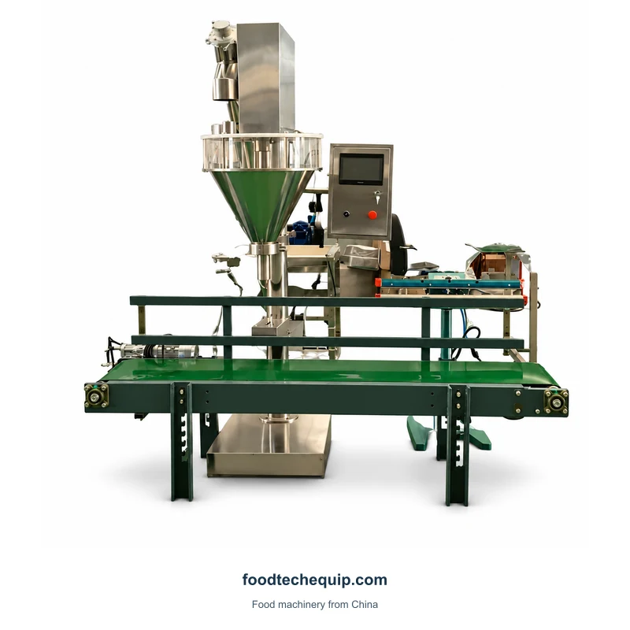

เครื่องบรรจุ
เครื่องบรรจุของเหลวแบบอินไลน์
หัวบรรจุแบบปั๊มแม่เหล็กมีให้เลือก 2, 4, 5, 6, 8, 10 หรือ 12 หัว โปรดเปรียบเทียบปริมาตรบรรจุและขนาดขวดของแต่ละชุด
ดูอุปกรณ์เริ่มต้นด้วยวัสดุที่อุณหภูมิเติมเติมเป้าหมายและการเปิดภาชนะ เปรียบเทียบรูปแบบปั๊มหรือสว่านกับเงื่อนไขเหล่านั้นจากนั้นตรวจสอบว่าภาชนะจะนําเสนอเติมและถ่ายโอนไปยังขั้นตอนต่อไป
หัวบรรจุแบบปั๊มแม่เหล็กมีให้เลือก 2, 4, 5, 6, 8, 10 หรือ 12 หัว โปรดเปรียบเทียบปริมาตรบรรจุและขนาดขวดของแต่ละชุด
ดูอุปกรณ์
สายบรรจุและชั่งผง พร้อมชุดป้อนวัสดุ สายพานลำเลียง และชุดควบคุมในตัว
ดูอุปกรณ์
เครื่องบรรจุของเหลวแบบอินไลน์พร้อมฝาครอบ จุดต่อป้อนวัตถุดิบ และชุดควบคุมในตัว
ดูอุปกรณ์


เครื่องบรรจุแบบอินไลน์พร้อมปั๊มโรตารี สายพานลำเลียง และจุดต่อป้อนวัตถุดิบ
ดูอุปกรณ์

เครื่องบรรจุของเหลวแบบป้อนด้วยแรงดัน พร้อมถังยกสูง หัวบรรจุ และตู้ติดล้อ
ดูอุปกรณ์
เครื่องบรรจุของเหลวแบบปั๊มเซรามิกขนาดกะทัดรัด พร้อมจอสัมผัสและหัวจ่ายปรับได้
ดูอุปกรณ์
เครื่องบรรจุแบบปั๊มสองหัว พร้อมสายพาน หัวปรับได้ และท่อป้อนวัตถุดิบ
ดูอุปกรณ์ ภาพประกอบอุปกรณ์
ภาพประกอบอุปกรณ์เครื่องบรรจุและซีลหลอดแบบแบ่งใช้ต่อครั้ง พร้อมชุดป้อนแบบชามและรางนำหลอด
ดูอุปกรณ์ลองใช้คําหลักอื่นหรือล้างตัวกรองของคุณ
อธิบายวัสดุที่อุณหภูมิบรรจุรวมถึงความสม่ําเสมออนุภาคและปริมาณเป้าหมาย จัดเตรียมตัวอย่างเพื่อหารือเกี่ยวกับการจัดการฟีดสําหรับการเตรียมการของคุณ
รวมถึงการเปิดภาชนะขนาดโดยรวมและเค้าโครงการจัดการ เปรียบเทียบช่วงการบรรจุและข้อมูลคอนเทนเนอร์สําหรับการกําหนดค่าหัวที่เลือก
| เลือกพื้นที่ | เกณฑ์เปรียบเทียบ | สิ่งที่จะให้ |
|---|---|---|
| วัสดุ: | เงื่อนไขที่จุดบรรจุ | ความสอดคล้องอุณหภูมิและอนุภาค |
| ตู้คอนเทนเนอร์ | เปิดและซองจดหมายภายนอกเต็มรูปแบบ | ภาพวาดคอนเทนเนอร์และตัวอย่าง |
| ชุดเครื่อง | การจัดเรียงศีรษะและปริมาณเป้าหมาย | การกําหนดค่าที่เลือกและอัตราที่ต้องการ |
การบรรจุสร้างปริมาณผลิตภัณฑ์ในรูปแบบที่ได้รับ การปิดเป็นงานแยกต่างหาก ระบุภาชนะจริงและปิดหรือระบุว่าจําเป็นต้องใช้ชุดที่ยืดหยุ่นจากนั้นแสดงวิธีการบรรจุออกจากตําแหน่งการบรรจุ